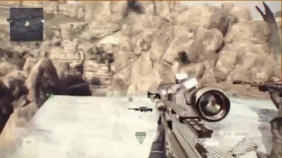
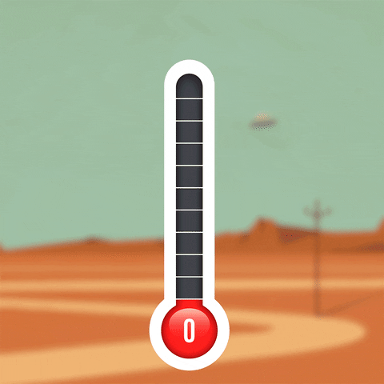

About Me
My name is Aiden Brown and I am going into my third year of high school.
I have five sibilings in total, 1 sister and 4 brothers.
I like to play video games with my friends and sometimes by myself.
Some of the games I play are Skate 3, the Call of Duty franchise, Fortnite, Minecraft, and Grand Theft Auto V.
I like to drive around the map in Grand Theft Auto in my dream cars.
I use a Chevrolet Corvette, Dodge Charger Hellcat, Dodge Challenger Hellcat, and different types of Ford Mustangs.
My favorite car to use is definitely the Ford Mustang.
When I have a bad day, I just get on Grand Theft Auto to drive and relax while listening to music.
I listen to music every day, usually listening to Rap.
I also like to roller skate, ride my bike, and listen to music.
I've been trying to learn how to roller skate backwards but it is not going too well currently.
Another trick I've been trying to learn is how to do a wheelie on my bike but like skating backwards, it is not going so well.
When I hangout with my friends or brothers, we usually ride bikes and play basketball.
I am interested in technology and hope to get a job in cybersecurity so I can make good money while doing something I love.

This is a crazy trickshot that someone hit.
When I first found out about trickshotting, it was all I wanted to do.
In every shooter game I had, I always attempted to hit a trickshot on someone.
My first choice of weapon was always a sniper when I played a shooter game.
Fun fact, during the beta for the most recent Call of Duty released, Modern Warfare III, I hit a trickshot on the map called Estate.
I was so excited because I actually wall-banged someone for the round win.
A wall-bang is when the bullet penetrates through a wall and hits the person, usually killing them.

This is a gif from the show Family Guy.
Family guy is one of my favorite shows.
The show is very funny to me, especially this gif.
After Lois takes Peter to a suit store, he finds some flannel pajamas.
Since almost every room in the house is carpet, Peter abuses his ability to shock people.
In this gif, Peter decides to shock Meg while she is sleeping.
Peter is one of my favorite characters in the show.

This is a gif made from the hit game Grand Theft Auto V.
The three main characters, Franklin, Michael, and Trevor, are doing the hear no evil, speak no evil, and see no evil like the three wise monkeys.
Franklin has always been my favorite character to play as.
Like I said in my about me section, I like to drive around in GTA listening to either Spotify, Apple Music, and sometimes Soundcloud.
I play GTA Online, which is where you can play with other people that have the same system as you.
I first started playing on Playstation 3, then I got a Xbox One, and now i am on computer.
This means that I bought the game three times, which shows that I am still not bored of Grand Theft Auto.
When I was in the first grade, I started playing the piano.
I stopped playing for a few years but I started again this year.
I really like playing the piano.
I have been taking piano lessons every sunday since May.
I think I am pretty good for having little experience.
Projects

During my time at the Hidden Genius Project, we worked on two coding projects.
We had to make a fully functioning Rock Paper Scissors game and a temperature converter.
This gif is a link to my Rock Paper Scissors code.
For this project, you are able to play Rock Paper Scissors with a computer.

This is the gif that leads to my temperature converter.
In my opinion, this project was more challenging than the rock paper scissors project.
We had to be able to convert Fahrenheit to Celsius and vice versa.
Experience
My experience with The Hidden Genius Project has been wonderful so far.
I am learning how to code in HTML, CSS, and Python.
I have met new people and made new friends.
I thought that I wasn't going to make any friends and that this was going to be a waste of my summer.
I was mad that my summer was going to be spent doing something boring instead of having fun with friends and going on trips.
It turns out that I was wrong and I am having a lot of fun at this project.
The staff is nice and I can really feel the brotherhood when I'm at The Hidden Genius Project.
We use coding websites called FreeCodeCamp and Replit.
FreeCodeCamp taught both HTML and CSS.
FreeCodeCamp helped me a lot with HTML and CSS.
Goals
My main goal in life is to get rich and have a family.
I don't want to be poor and unhappy in life.
I want to get rich so I can support my family and buy things that I want.
I like cars so with my money, I would buy some of my dream cars.
A goal that I am working on right now is to turn in all my assignments on time and make my portfolio look as best as it can.
Using what I learned from The Hidden Genius Project, I want to give back to my community because of the concept Ubuntu, meaning "I am because we are."
We take accountability of each other because at The Hidden Genius Project, we are a brotherhood.
I hope to use my time at The Hidden Genius Project to help me in the future and get a job in technology.